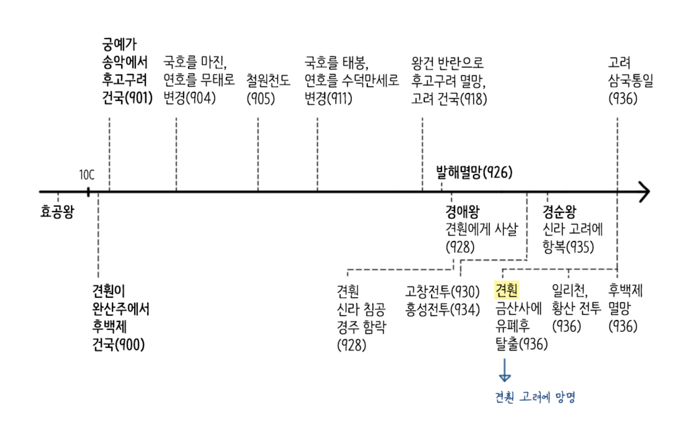
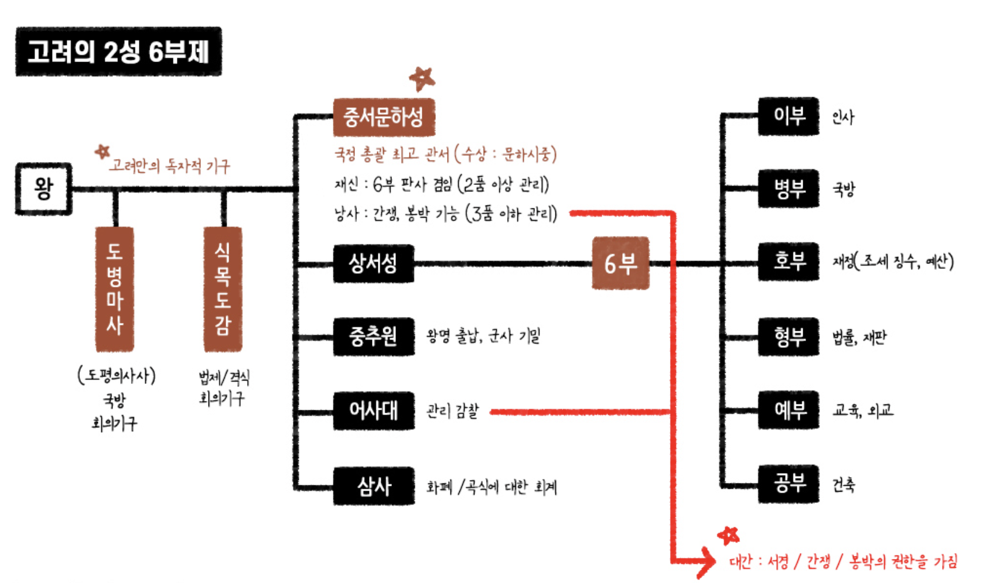
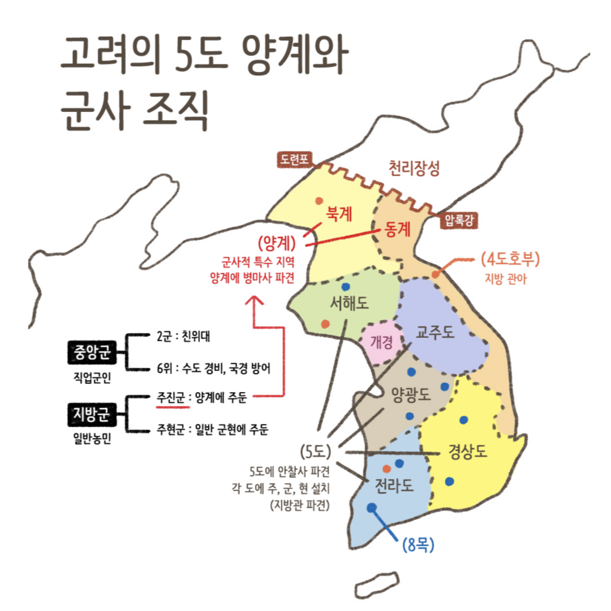
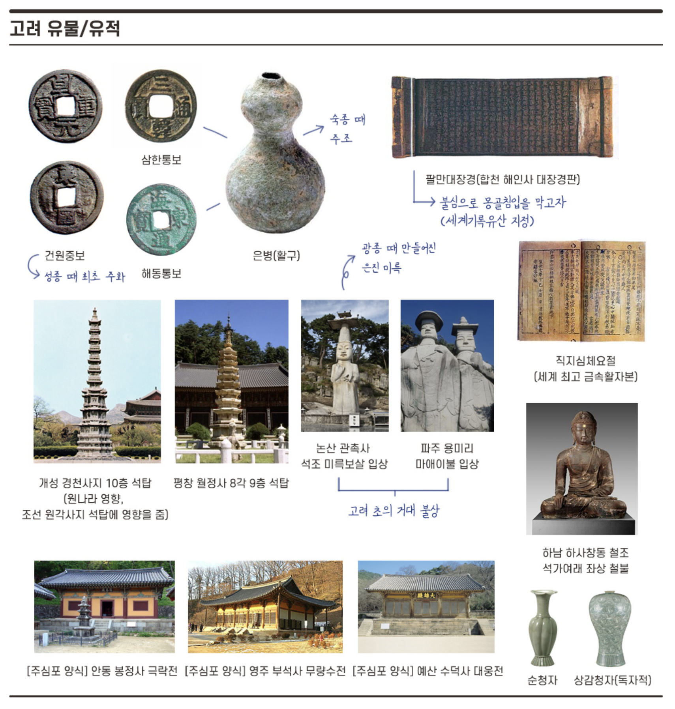

고려 건국 전
통일신라와 후삼국시대
후백제 : 완산주(전주)에서 아자개의 아들 견훤이 건국(900), 중국 후당과 오월에 사신 파견, 경주를 함락하고 경애왕 살해, 고려와 공산전투(927), 고창전투(930) 후 아들 신검의 반란으로 금산사에 유폐당함(935) > 고려에 망명하여 왕건과 함께 일리천/황산 전투(936) 진행 > 신검이 양검, 용검과 문무 관리를 이끌고 나와 왕건에게 항복(936)
※ 공산 전투만 후백제가 승리(신숭겸 전사)하고 모든 전투에서 고려가 승리함(고창 전투, 일리천 전투, 황산 전투)
후고구려 : 송악(개성)에서 양길의 부하 궁예가 건국(901), 국호를 마진, 연호를 무태로 변경(904), 철원 천도(905), 국호를 태봉, 연호를 수덕만세로 변경(911), 광평성을 중심으로 새로운 관제 마련, 9 관등제 실시, 순군부와 내군 설치, 미륵신앙을 이용하여 전제 정치 도모, 배현경, 신숭겸, 복지겸 등의 4인 호족세력이 시중 왕건을 왕으로 추대하고 쿠데타를 일으킴 > 궁예 패배하여 자결(918)

고려
918년 ~ 1392년
(10세기~14세기)
고려는 후고구려의 장수이며 송악의 강력한 호족이었던 왕건이 건국한 나라입니다. 후고구려의 왕이었던 궁예는 관심법을 들어 마음에 들지 않는 무고한 신하들을 대거 숙청했습니다. 이에 위기감을 느낀 홍유, 배현경, 신숭겸, 복지겸 등과 일부 호족들은 시중 왕건을 왕으로 추대하고 군사정변을 일으켜 918년 새로운 나라 고려가 탄생하게 되었습니다. 왕건은 넓은 포용력으로 멸망한 발해의 유민을 받아들였고, 신라에 우호적인 외교전을 펼쳐 신라의 마지막 왕은 왕건에게 나라를 바치며 신하가 되기를 청했고, 백제의 견훤은 아들에게 배신당하자 왕건에게 투항하고 함께 전장에 나서니 마침내 50년간 혼란스러웠던 후삼국이 936년 고려로 통일되었습니다.
사회경제 : 예성하구 "벽란도"에서 국제 무역이 성행
관련인물 : 묘청, 김부식, 최충헌, 최우, 노국대장공주, 신돈, 최영, 이성계, 최무선, 강감찬, 척준경, 일연, 의천, 지눌, 혜심
유물유적 : 초조대장경, 해인사 장경판전, 팔만대장경, 은병(활구), 직지심체요절(최초금속활자본), 순청자, 상감청자(고려 독자적), 논산 관촉사 석조 미륵보살 입상, 파주 용미리 마애이불 입상, 영주 부석사 소조여래 좌상, 안동 봉정사 극락전, 영주 부석사 무량수전, 예산 수덕사 대웅전, 평창 월정사 8각 9층 석탑, 개성 경천사지 10층 석탑, 이암 "농사집요(원나라에서 가져옴)", 일연 "삼국유사", 김부식 "삼국사기"
고려 역대 왕조 더보기 >
[1]태조 : 호족 통합책(혼인 정책, 사성 제도, 역분전 지급), 호족 견제책(사심관 제도, 기인 제도), 흑창 설치(빈민 구제 기구), 훈요 10조(거란 강경책 → 만부교 사건), 관리 규범을 제시하는 《정계》, 《계백료서》 편찬, 연호 사용 "천수"
[2] 혜종 : 왕규의 난(945) > 왕식렴에게 제압
[3] 정종 : 광군 조직(거란 침입 대비 특수 군단)
[4] 광종 : 왕권 강화, 노비안검법 실시(양민을 노비에서 해방 호족 약화, 양민에 세금 부과 재정 확보), 칭제 건원(독자적인 연호 사용 : "광덕', "준풍"), 과거제도 실시(쌍기의 건의), 공복 제정(자.단.비.녹), 제위보 설치(빈민 구제 기구), 주현공부법(지방 단위로 조세 징수), 불교 융성
[5] 경종 : 전시과 실시 / 시정 전시과(전.현직 관리/인품+18 관등, 세습 불가)
* 사성 제도 : '왕'씨 성을 하사함
* 기인 제도 : 인질 제도(통일 신라 상수리 제도와 비슷)
* 역분전 : 관등에 관계없이 인품과 공로를 기준으로 한 수조지(개국공신을 위한 토지제도)
* 노비안검법 : 억울하게 노비가 된 양민들의 신분을 회복(호족들의 세력 약화, 양민이 내는 조세 증가, 왕권 강화책)
* 주현공부법 : 지방의 주, 현 단위로 해마다 바치는 공물과 부역의 액수를 정한 법률(조세 제도, 왕권 강화)
|
※ 문벌귀족사회 진입 : 지방호족세력 및 6두품 계열의 유학자들이 관직 독점 (음서제로 인해 문무 관리 5품 이상의 후손은 과거 없이 관리로 임용 가능) |
[6] 성종 : 최승로의 시무 28조(유교 체제 정비), 중앙 2성 6부제, 지방 12목에 지방관 파견, 지방에 경학박사와 의학박사 파견, 향리 제도 마련(지방 세력 견제), 국자감 설치(최고 국립 교육 기관), 국자감에 도서관 설치, 연등회와 팔관회 폐지, 의창 설치(빈민 구제 기구), 상평창 설치(물가 조절 기구), 최초 주화 '건원중보' 주조, 거란의 1차 침입(소손녕) > 서희 강동6주 확보
[7] 목종 : 개정 전시과(전.현직 관리/18관등), 강조의 정변(거란의 2차 침입 원인이 됨)
[8] 현종 : 거란의 2차 침입(양규의 선전) > 거란의 3차 침입 '강감찬의 귀주대첩'(1019, 소배압), 나성 축조(개경), 천리장성 축조(압록강~도련포, 거란침입대비), 연등회와 팔관회 부활, 초조대장경 간행, 4도호부, 8목, 5도 양계
[11] 문종 : 경정 전시과(현직 관리+관직), 경시서 설치(수도의 시전 감독 기관), 최충 9재 학당과 사학 12도 설립, 넷째 아들 의천
[15] 숙종 : 별무반 창설(윤관), 주전도감 설치, 활구(은병), 해동통보 등 주조, 국자감에 서적포 설치(인쇄소)
[16] 예종 : 윤관 여진 정벌 후 동북 9성 축조(1107), 국자감에 전문 교육 과정인 7재 개설, 양현고 설치(장학 재단), 혜민국, 구제도감 설치
[17] 인종 : 이자겸의 난(외척의 왕위 찬탈, 금 사대 요구, 척준경의 배신), 묘청의 난(서경파, 진보, 금국 정벌 주장, 서경 천도 주장), 김부식(개경파, 보수, 금 사대, 신라 계승, 현존 최고 역사서인 《삼국사기》 편찬)
* 흑창 = 의창(빈민 구제 기구)
* 국자감 : 교육기관으로 고구려의 태학, 신라의 국학, 발해의 주자감과 비슷한 기능을 하고 있음.
* 별무반 : 여진족 대비 특수부대 신기군(기병), 신보군(보병), 항마군(승병)으로 구성.
* 도병마사의 변천 : 성종 때 병마사 최초 설치 > 현종 때 도병마사로 정비 > 무신정권때 위축 > 충렬왕 때 도평의사사(도당)로 개편 및 최고 정무 기구로 진화 > 조선 정종 때 도평의사사 혁파
* 신채호는 묘청의 서경천도 운동을 '일천년래제일대사건'이라 평가하였다.

* 서경 : 관리 임명 및 법률 동의 및 거부권
* 간쟁 : 왕의 잘못에 대한 비판 및 간언
* 봉박 : 잘못된 왕명에 대한 거부권
|
무신에 대한 차별 대우로 무신들이 정변을 일으키고 권력을 잡음
|
[18, 19] 의종 ~ 명종 : 무신정변(1170, 이의방(제거) > 정중부(제거) > 경대승(죽음) > 이의민(제거) > 최충헌 > 최우)
최씨 정권이 권력 세습, 경대승 도방 설치(사병 기구), 최충헌 교정도감 설치(봉사 10조), 최우 정방 설치(인사권) 및 서방 설치(사대부 형성), 삼별초 조직(좌별초, 우별초, 신의군 : 공적인 면을 가지고 있지만 사병기구로 활용)
농민 봉기 : 망이 망소의 난(1176, 정중부 집권기, 신분해방 주장, 공주 명학소), 김사미 김효심의 난(1193, 이의민 집권기), 만적의 난(1198, 최충헌 집권기, 최충헌의 사노, 역사 최초 천민의 난)
[23] 고종 : 몽골의 1차 침입(1231) > 몽골 2차 침입(1232, 최우 강화 천도) > 김윤후가 처인성에서 몽골 장수 살리타 사살 > 몽골 3차 침입(1235) > 황룡사 9층 목탑 소실, 팔만대장경 제작(몽골 침입 대비), 향약구급방 편찬(대장도감에서 간행한 우리나라 최고 한의서)
[24] 원종 : 삼별초 대몽 항쟁(강화도 > 진도 > 제주도) , 개경 환도(1270)
* 삼별초 : 몽골 침략 대항 특수 부대로 좌우 야별초 + 신의군으로 구성
* 고종 때 몽골이 철령 이북 땅에 쌍성총관부 설치(영토 상실)
* 원종 때 몽골이 제주도에 탐라총관부를 설치. 다루가치를 두어 다스리며 충렬왕 때는 목마장을 설치하며 말의 수요를 충당(영토 상실)
* 원종 때 몽골이 동녕부 설치(원나라가 고려 서경 편입 후 평안도 지방에 설치한 통치 기관)
|
※ 원 간섭기 : 친원파 권문세족의 성장(대표적인 인물로는 기황후의 외척인 기철이 있다) |
[25] 충렬왕 : 정동행성 이문소(일본 정벌 기구), 응방 설치(매 징발), 공녀, 몽골풍 유행, 고려양 유행, 도병마사 > 도평의사사로 개편(최고 정무 기구로 발전, 권문세족이 장악), 국학을 성균관으로 개칭
* 삼별초 : 몽골 침략 대항 특수 부대로 좌우 야별초 + 신의군으로 구성
[31] 공민왕 : 친원파 숙청(기철), 정동행성(이문소) 폐지, 쌍성총관부 공격(철령이북 땅 수복), 전민변정도감(신돈), 정방 폐지, 성균관을 순수 유교기관으로 정비, 문익점 원나라에서 목화씨 밀수입, 신진사대부 성장, 홍건적의 난(신흥 무인세력 등장, 최영, 이성계), 과거 제도 정비
[32] 우왕 : 요동정벌 단행, 이성계 위화도 회군(1388), 화통도감 설치(최무선), 진포대첩(최무선 화포 사용), 황산대첩(이성계 활약), 흥덕사 "직지심체요절" 간행
[34] 공양왕 : 과전법 시행(수신전과 휼양전)
* 전민변정도감 : 고려 후기 권세가에게 점탈된 토지·농민을 되찾기 위해 설치된 임시관서
* 직지심체요절 : 세계 최초 금속 활자본(유네스코 세계 기록 유산으로 지정)

* 향, 소, 부곡이라 불리는 특수 행정 구역 존재
* 지방관이 파견되는 주군, 주현보다 파견되지 않는 속군, 속현이 더 많음
* 3경 : 개경, 서경(평양), 동경(경주) > 남경(한양)으로 변경
고려시대 불교 사상 비교
의천(문벌귀족) : 천태종, 교종 중심, 교+선=교관겸수, 화폐사용 주장(의천의 건의로 숙종 때 주전도감 설치)
고려 11대왕 문종의 넷째 아들
지눌(무신정권) : 조계종, 선종 중심, 선+교=정혜쌍수, 돈오점수, 수선사 결사운동(불교 타락 비판) > 혜심의 "유불일치설"(성리학 수용의 계기를 마련)
